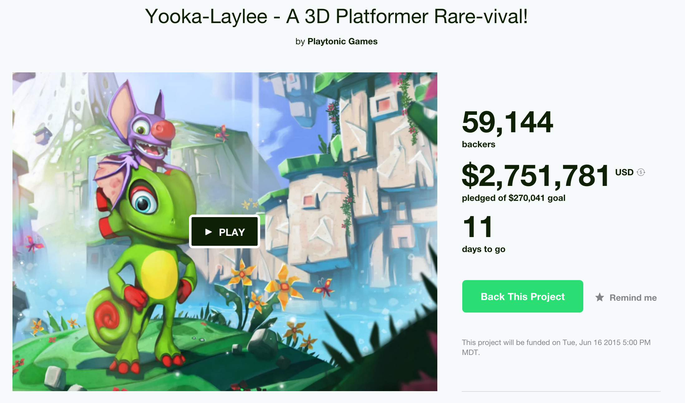

Here are a list of 10 inspiring designs. Each feature is highlighted and in no particular order.
Serebii.net's image viewer
View Component Re-creation
Target audience
The target audience for this particular page includes people who are keeping up with latest news on pokemon, as these are pre-release pictures of one of the games.
User needs, goals and processes
So here the goal of the user is not necessarily to explore the site, but solely to view the images, as they themselves are the news. Therefore, a way should be used to get the image as best and conveniently as possible to the user.
Design choices
This image viewer overlays a shadow on top of the usual content of the page. This provides higher contrast between the focused image and background page. The effect of this contrast is to better grab the audience's attention. It also has very obvious button functionality, as well as a simple title/number textbox below the image. The buttons are made with no words, only iconography, to because the function is made obvious with the icons, and words would distract from the image. Below, where there are words, they are the title and image number. These are provided as reference in case anyone were to want to share the latest image-based news, and the title is a complement to the image in providing information. Therefore, it is slightly more important than the image number, and for this reason has higher contrast with the background for more visibility.
Twitter's "Compose new tweet" box
View Component Re-creationTarget audience
Twitter makes it easy for anyone wanting to /briefly/ socialize (evidenced by the low character count) with others, and to make celebrities' or companies' news more accessible to the masses.
User needs, goals and processes
Because tweets are so short, and users are often following many other people, they need to be read and typed quickly. Navigating through many menus in order to share something would be of hindrance, and few visual choices really need to be made.
Design choices
Sharing a tweet is two button clicks away. This option of minimalism makes the process light and easy. This is further reflected in the actual interface. It is highly minimal, with every option having an icon beside it to quickly inform a user should they choose to ignore the text. Similar to above, the contrast between this box and the background is heightened to lend importance. Worth noting is that the character counter has no label with it. This is likely done because it is a necessary piece of the interface, and as the user starts typing, the function will be increasingly visible.
Pokemon's sub-call to action
View Component Re-creation
Target audience
This is focused on kids primarily, teens and adults second. This is identified in the brand itself. Post-child age people are still included in this, as they are more likely to see the advertising for this page in social media.
User needs, goals and processes
On the page this is taken from, the primary call to action is not shown in this image. The page overall is designed for people who wanted to show their favorite pokemon within a certain category by voting. Underneath this is where the image shown comes from. The goal at this point has most likely been completed, and the mode of thinking switches from having something specific in mind to general browsing.
Design choices
This component has three options, all of which are just an image and three to five words. Having nice visuals with few words and options works quite well for children, as they are not usually keen on reading the full length of paragraphs on web pages. The large, white text on off-black background creates enough contrast for kids to be able to clearly read th text should they choose to. Continuation and general cohesion is made use of here, as all the items are contained in the same shaped box. The images also mildly summarize the links. For example, the middle on is an article on the specific pokemon shown in the image, and the right side image is taken from the poster of the movie this links to. The reason I felt this should be highlighted is because the information can be delivered by means of images, something that appeals to most people, as proven in the use of icons instead of words elsewhere.
Youtube's menu system
View Component Re-creation
Target audience
This menu is designed for users who want to watch media as opposed to uploading or creating it.
User needs, goals and processes
Users may have something specific in mind, but often they are looking for more general fields of video subjects, as opposed to one specific video. These may be related in terms of who they are subbed to, etc. Therefore, the thing they have in mind can be filtered through categories.
Design choices
It files like items into separate bins. For example, all the playlists are contained together, all the subscriptions are together, etc. This is effective at satisfying the user's expectations because it makes it easier to find things to watch without needing to search a specific keyword. This utilizes the gestalt principle of proximity to group together similar items. The use of color here is also of note, as the headings are all in red. Again, this groups similar objects by an identity. Furthermore, the typography is key as it is merely a narrower version of the logo. This is done to promote branding and slightly increase legibility. Iconography used here contributes to these as well.
Lost Worlds Fair's Team Bio
View Component Re-creation
Target audience
This site is primarily used to just show off some web design, and the target audience is therefore people looking for design inspiration and tricks, possible seeing what fonts and things like that to use for something similar.
User needs, goals and processes
Anyone looking at the footer of a website is more likely than not trying to find out more information or attempting to contact the company.
Design choices
The footer for the main page is where any actual content lies; everything else on the site is little more than setting the mood through made up facts or random bits of text. What makes this effective is that the footer's use of images. The colors are all complementary to one another and the rest of the site, the logo-esque circle in the center is a focal point because of its contrast in color with the rest. As for typography, the headers are the same color and font as the rest of the headers on the page, which boosts the continuity of the site. Getting into the obvious, gestalt proximity is used also to group the members' names, info, and photos together. This all addresses the user's goals because these aspects work together to form a clear field of information that is very accessible and interest arousing.
Music City's Contact page
View Component Re-creationTarget audience
The target audience here is a fan of music that likes (or dislikes) the site or authors so much that they wish to lend them some sort of information to them, whether it be appreciative comments, notices about something wrong, or flat out complaining.
User needs, goals and processes
The goal for a contact page is to get in touch with the brand or person being contacted. Pretty simple, I don't know what else to say.
Design choices
The ripped paper edge, irregularities in line, illustration style graphics, handwriting type font, and the guitar picture makes it feel almost as if you were writing an actual letter to them. This gives an air of professional informality. The design choice and pastel colors are warm and inviting, and a portion of the site can still be seen off to the side, which promotes browsing the site in the meantime..
Equestria Daily's nav bar
View Component Re-creation
Target audience
Equestria Daily is a news site for anything My Little Pony related. The audience that most frequents this site is made up of teens to middle adults though, and the designers recognize this and design the site around that.
User needs, goals and processes
Specifically for the nav bar, the goal here is to sift through the massive list of media that is stored. Often the user is looking for something specific while using this nav bar, as general browsing is done in the main body of the page, viewing all items in reverse chronological order.
Design choices
The options are separated into sub-menus that dropdown upon hover, so that refining the categories isn't overwhelming at first glance. This grouping uses a form of proximity and continuity that relates the subcategories together visually beneath the primary category. The color scheme is primarily what draws me to it; off black with white text has high contrast, and the categories are color-coded. The many colors are not an eye sore and work well with each other and the rest of the nav bar. The reason this myriad of colors works with the target audience is that it a) pairs certain content and colors together to quicken the association between the two, and b) works harmoniously with the topic of the media- colorful ponies. The reasoning behind the pairing is not entirely formulated, as the colors just appear in the same order as a rainbow (with pink on the end) and categories based on content amount and popularity from left to right.
Kickstarter's information display
View Component Re-creation
Target audience
This site is designed to find and contribute to, or post interesting or influential projects. Users here typically are financial contributors to these projects. Psycho and demographics associated are people old enough to have a credit card (18+ in US or child with parent's permission) and trendy enough to want to make a push to a conceptual project before it is fully realized, with potentially little benefit to themselves compared to the intended audience of each individual project.
User needs, goals and processes
The user viewing a page shown here is attempting to gather information on, or contribute to, a previously selected project.
Design choices
Shown here is the title and person or team heading the project, below is an informational video, and funding info is to the right. What makes this work is the visual hierarchy at play. To see this screen you had already clicked the title, so the title isn't super important at this point, but still a key item. It therefore is normal font in a medium size. The key parts of their goal stand out in a large, bold font, contrasting the labels being in a much smaller bold type. The call to action is the only thing (besides the video) to have color in this section, drawing attention to it through this other form of contrast. Not shown here is the list of projects, filtered by category. I mention this because the pledge goal is visually represented with a progress bar, quickly demonstrating where it is at in its goal through a green on white bar, which gives the user a quick way to see where funding is at. The green color is used throughout the site as branding, and green is often associated with both growth and money.
Hot Topic's sign up page
View Component Re-creation
Target audience
Hot topic is aimed at punk teens and people into the related music genre or pop culture. They are primarily a clothing store that also sells general band or pop brand merchandise.
User needs, goals and processes
The user on the sign up page wants to make an account, possibly to save time at checkout, possibly to receive discounts, possibly to get news on arrivals.
Design choices
This sign up page is excellent because the branding graphic and text indicate the mood of the site. "We reserve the right to completely rock your world" is a nice touch to it. The colors black and red are typically combined to make an "edgy" tone, and the stenciling on the logo appears as though it is spraypainted. The typography of headings is reminiscent of the logo, but it is without the stencil lines. This is done to appeal to this edgy, punk crowd that they expect visit their site. Besides tone, this is also effective in its at-a-glance simplicity. The create an account form is not on the page, thus the only thing immediately required for sign up is to click the button. This makes the page a lot less cluttered and simplistic. The call to action is also at the top, before you see the join/login. It's use of a large white HT+1 creates a huge contrast to the black used in excess on the rest of the page, directing your attention to this CTA. Login forms and text are grouped, and the CTA text is as well. This uses gestalt proximity.
I Shot Him's header
View Component Re-creation


Target audience
The target audience here is a little harder to define, I suppose you could call them design enthusiasts. Similar to the Lost Worlds Fairs site, this is used primarily to show off design. However, it does have actual content, which involves social change and general good motives. The target audience would presumably be in support of these.
User needs, goals and processes
The user on this site is likely browsing. Not much can be said about what they want to find out, as it is a collection of the creator's works. With all probability, they arrived here looking for design examples.
Design choices
This is a designer-based site, so the home page here clearly demonstrates this with the header. As you scroll down, the body of the document slowly overlaps the image. Then a functional header transitions into view, shown in the third image. This is unique and stresses the design of the site, to essentially show they know what they are doing. The UI here plays an animation as the regular header slides into view depending on where you are at on the page. This also provides a nice response to scrolling, the impact being that it is essentially rewarding the user for doing so in a ever-so-slight way as you begin exploring the site. The font selection is pulled together in its color- pastel. Most design artists use pastel colors, and it therefore fits not only the site's content, but also the target audience.